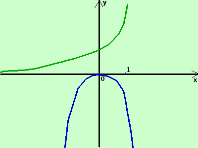
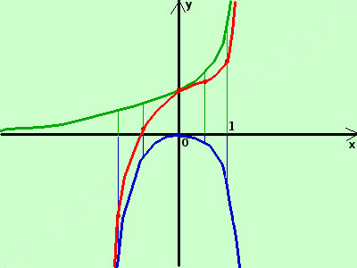

|
sviluppo Tracciare intuitivamente il grafico della seguente funzione scomponendola in opportuni addendi y = ex - x2
 la prima e' la funzione esponenziale (la disegno in verde) la seconda e' l'inversa della parabola con vertice nell'origine (la disegno in blu) adesso sommo algebricamente in alcuni punti dell'asse x il valore delle due funzioni (in pratica sottraggo fra loro i segmenti verticali in verde ed i segmenti verticali in blu sulla stessa ascissa) ottengo i punti (in marrone)
collego fra loro i punti trovati con una curva continua ed ottengo una rappresentazione intuitiva della mia funzione somma (la curva rossa)  |